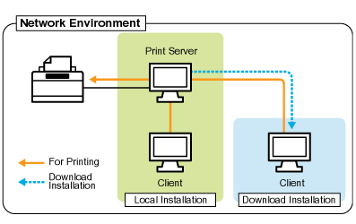

If you use the printer in the print server environment, you can perform printing from other computers (clients) that are not directly connected to this printer.
 |
The computer directly connected to the printer is called "print server", and the other computers which use the printer via the print server are called "clients."
|

Also, if you set the print server, you can manage the printer efficiently as follows.
You can manage all the clients' jobs on the print server.
Clients can download and install the printer driver from the print server. (The CD-ROM is not required.)
If you want to use the printer in the print server environment, perform any one of the following tasks.
If your computer is the print server
|
1.
|
Install the printer driver.
|
||
|
2.
|
Configure the print server.
|
If your computer is a client computer
Install the printer driver.
There are two ways to install the printer driver on client computers: Local installation and download installation.
<Local Installation>
You can install the printer driver using the supplied CD-ROM.
<Download Installation>
You can install the printer driver without using the supplied CD-ROM, but by downloading the printer driver from the print server. There are the following two ways to download and install the printer driver.
|
NOTE
|
||
|
Precautions when downloading and installing the printer driver
If a 64-bit operating system is running on the print server, the download installation for a client computer on which any of the following 32-bit operating systems is running is not supported due to the Windows restriction.
Windows 2000
Windows XP (on which no service pack or SP1 is installed)
Windows Server 2003 (on which no service pack is installed)
|